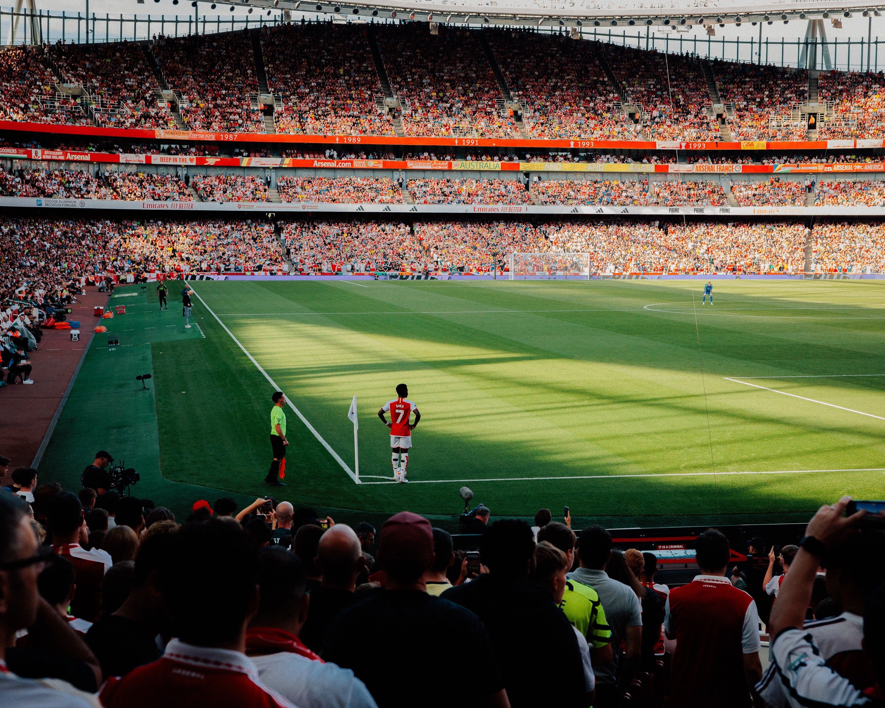

Bukayo Saka: Arsenal's Starboy
Bukayo Saka, the prodigious talent hailing from Arsenal Football Club, has captured the hearts of fans and pundits alike with his electrifying performances on the pitch. Born on September 5, 2001, in London, England, Saka has swiftly risen through the ranks to become one of the most promising young talents in world football. Operating primarily as a versatile winger or attacking midfielder, Saka's most defining attributes are his exceptional dribbling skills, pinpoint crossing, and football intelligence beyond his years. Saka's journey with Arsenal began in their youth academy, where he showcased immense potential before making his first-team debut in 2018. Since then, he has consistently impressed with his composure, versatility, and the ability to influence games at crucial moments. His outstanding ability to beat defenders one-on-one and deliver inch-perfect crosses has made him a valuable asset for the Gunners. On the international stage, Saka has donned the Three Lions of England, representing his country with distinction. His performances at major tournaments have not only earned him praise but have also solidified his place as one of England's most exciting young talents. Beyond his footballing prowess, Saka is revered for his humility and dedication to his craft, embodying the values of a true professional. As he continues to mature and hone his skills, the future appears exceedingly bright for Bukayo Saka, and Arsenal fans eagerly anticipate the heights he will undoubtedly reach in his career.